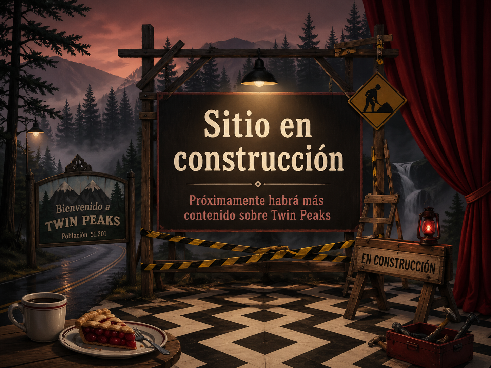
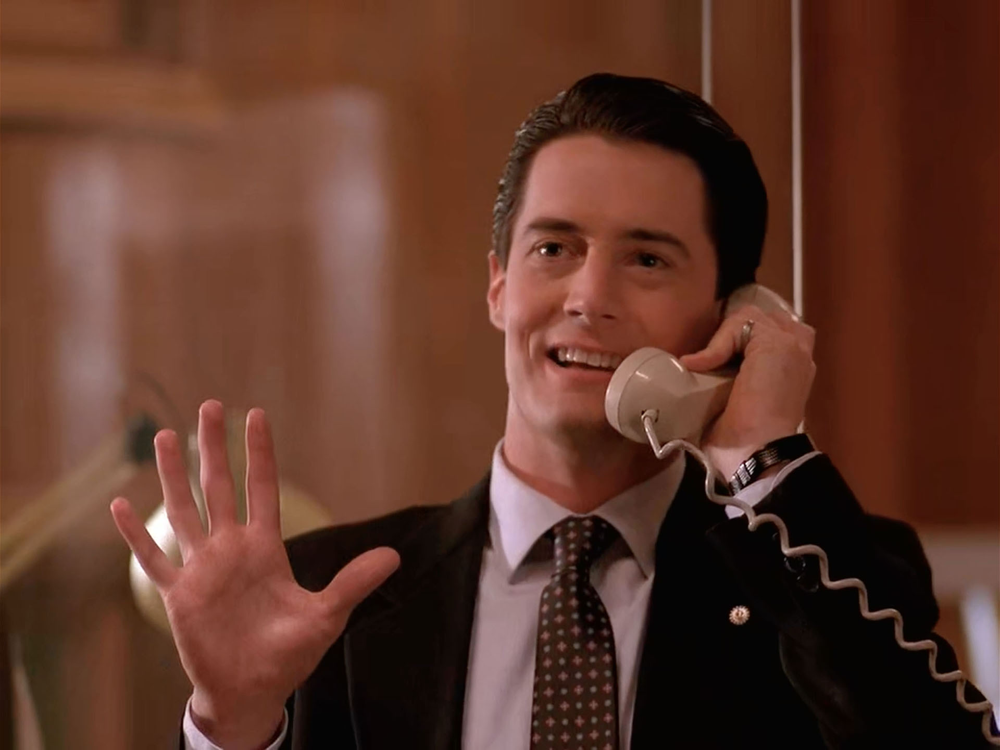

Esta parte del sitio todavía no está terminada. Próximamente se agregará un formulario de contacto para recibir mensajes, consultas y comentarios relacionados con Twin Peaks.


Esta sección está dedicada al contacto con los visitantes del sitio y funciona como un espacio pensado para recibir comentarios, opiniones o consultas relacionadas con Twin Peaks y con el contenido desarrollado en esta página.
La idea de este apartado es ofrecer un punto de conexión dentro del sitio, manteniendo la misma estética general y completando el recorrido por los distintos aspectos de la serie, sus personajes, sus temporadas, sus locaciones y sus curiosidades.

Esta parte del sitio todavía no está terminada. Próximamente se agregará un formulario de contacto para recibir mensajes, consultas y comentarios relacionados con Twin Peaks.